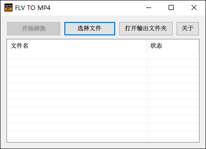
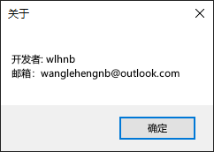
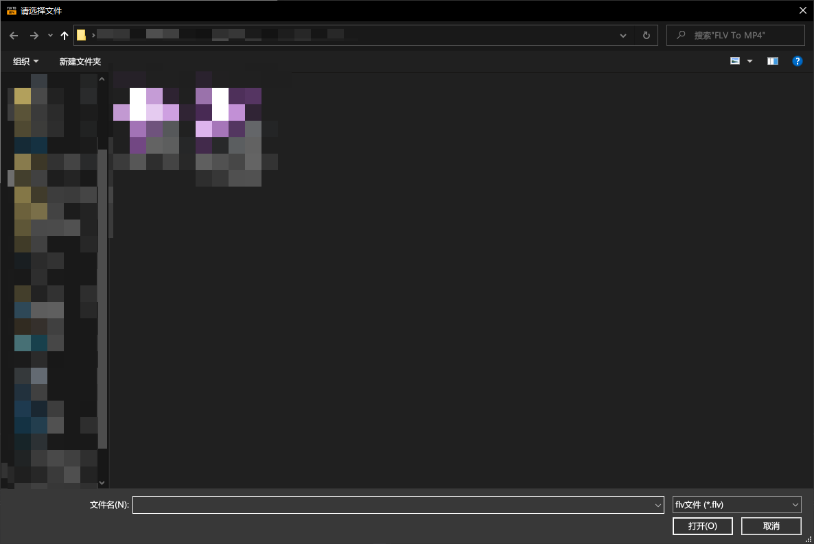
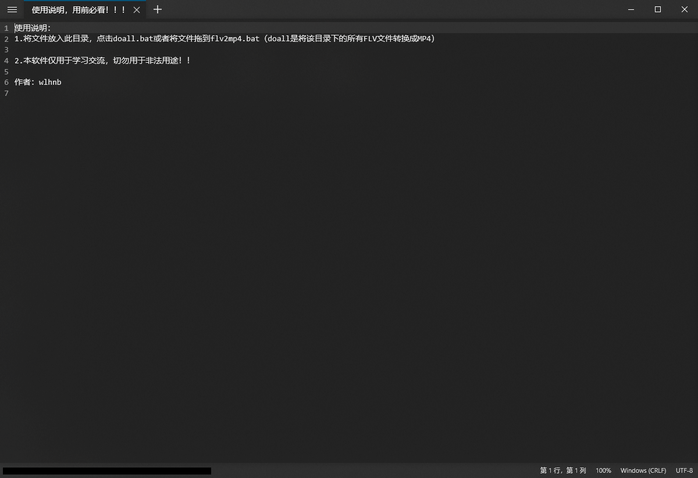
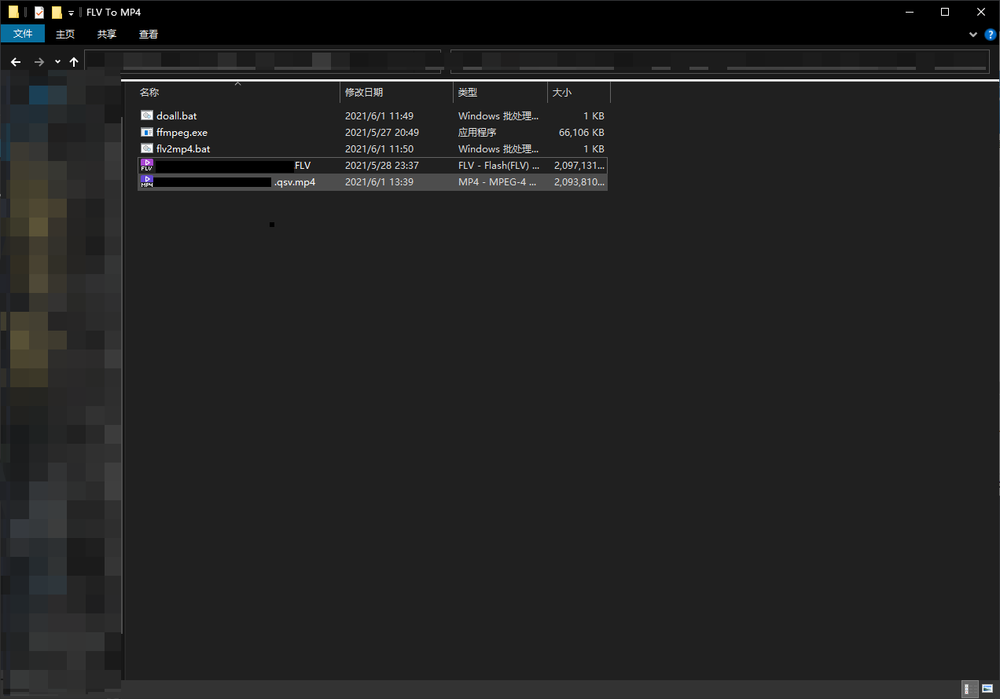
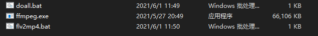
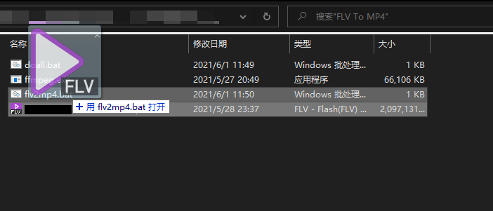
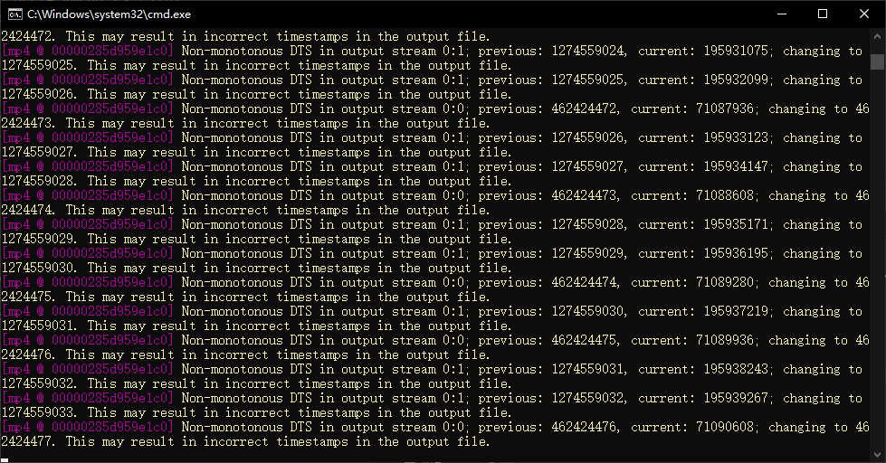

FLV格式转换mp4格式
软件截图








1.增加GUI
2.算法优化
3.其他细节更新
| 名称 | 介绍 | 下载 |
|---|---|---|
| NET Framework4.5官网 | 前往NET Framework4.5官网下载 | NET Framework 4.5官网 |
| NET Framework4.5 | NET Framework4.5安装包 | exe |
| 名称 | 介绍 | 下载 |
|---|---|---|
| FLVTOMP4 V2.0 | FLV视频格式转换成mp4格式 | EXE |